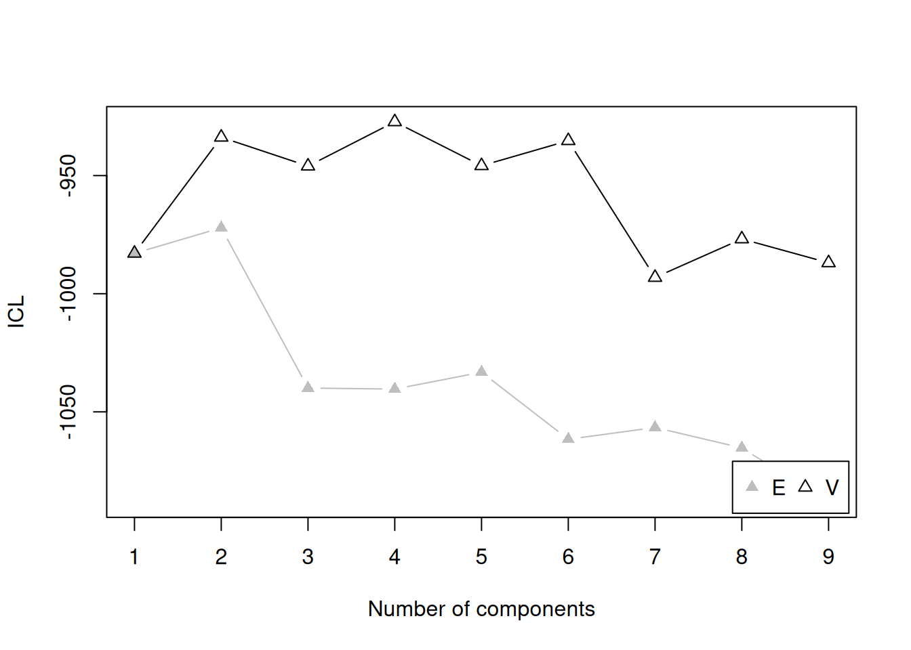
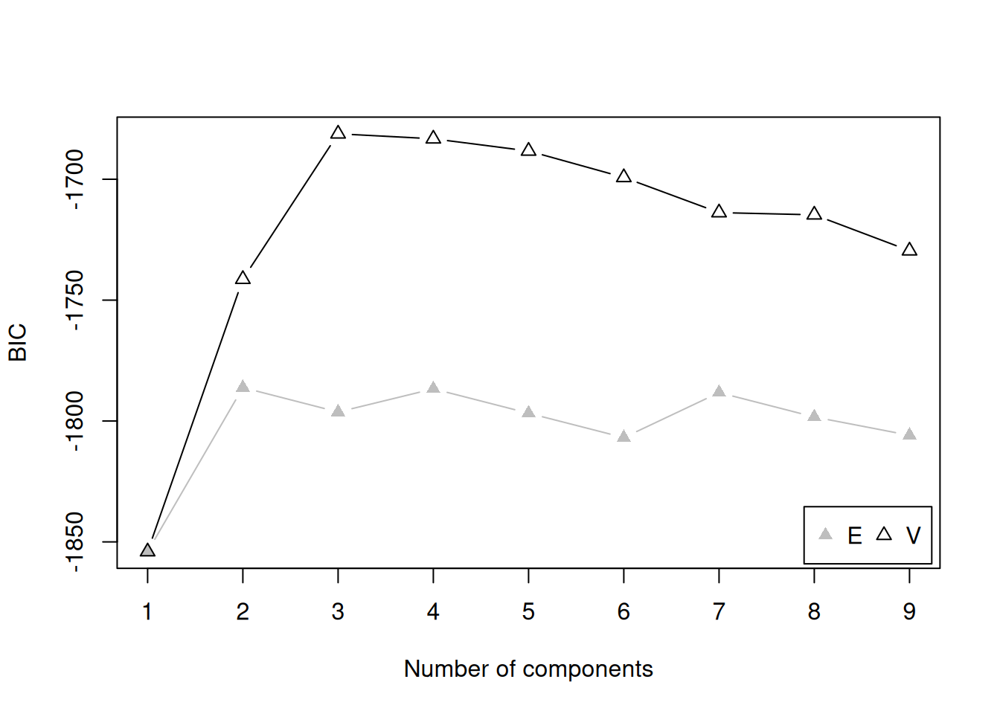
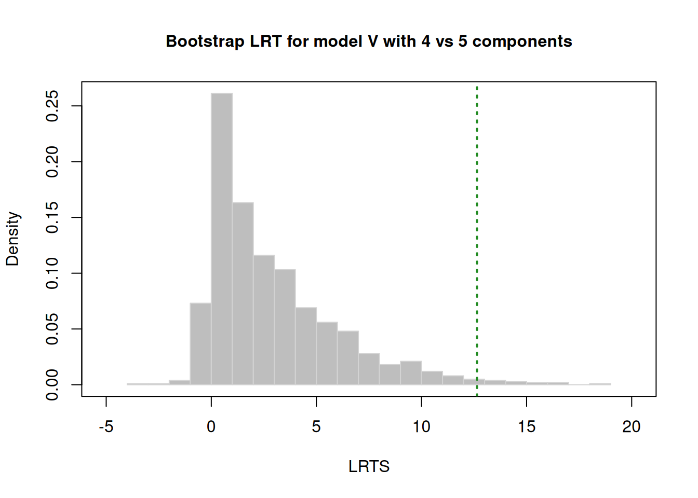

I want your feedback to make the book better for you and other readers. If you find typos, errors, or places where the text may be improved, please let me know. The best ways to provide feedback are by GitHub or hypothes.is annotations.
Opening an issue or submitting a pull request on GitHub: https://github.com/isaactpetersen/Fantasy-Football-Analytics-Textbook
Adding an annotation using hypothes.is.
To add an annotation, select some text and then click the
symbol on the pop-up menu.
To see the annotations of others, click the
symbol in the upper right-hand corner of the page.
20 Cluster Analysis
20.1 Getting Started
20.1.1 Load Packages
20.1.2 Load Data
20.1.3 Overview
Whereas factor analysis evaluates how variables do or do not hang together—in terms of their associations and non-associations, cluster analysis evaluates how people are or or not similar—in terms of their scores on one or more variables. The goal of cluster analysis is to identify distinguishable subgroups of people. The people within a subgroup are expected to be more similar to each other than they are to people in other subgroups. For instance, we might expect that there are distinguishable subtypes of Wide Receivers: possession, deep threats, and slot-type Wide Receivers. Possession Wide Receivers tend to be taller and heavier, with good hands who catch the ball at a high rate. Deep threat Wide Receivers tend to be fast. Slot-type Wide Receivers tend to be small, quick, and agile. In order to identify these clusters of Wide Receivers, we might conduct a cluster analysis with variables relating to the players’ height, weight, percent of (catchable) targets caught, air yards received, and various metrics from the National Football League (NFL) Combine, including their times in the 40-yard dash, 20-yard shuttle run, and three cone drill.
There are many approaches to cluster analysis, including model-based clustering, density-based clustering, centroid-based clustering, hierarchical clustering (aka connectivity-based clustering), etc. An overview of approaches to cluster analysis in R is provided by Kassambara (2017). In this chapter, we focus on examples using model-based clustering with the mclust package (Scrucca et al., 2023), which uses Gaussian finite mixture modeling. The various types of mclust models are provided here: https://mclust-org.github.io/mclust/reference/mclustModelNames.html.
20.1.4 Tiers of Prior Season Fantasy Points
20.1.4.1 Prepare Data
Code
[1] 2023Code
player_stats_seasonal_offense_recent <- player_stats_seasonal_offense %>%
filter(season == recentSeason)
player_stats_seasonal_offense_recentQB <- player_stats_seasonal_offense_recent %>%
filter(position_group == "QB")
player_stats_seasonal_offense_recentRB <- player_stats_seasonal_offense_recent %>%
filter(position_group == "RB")
player_stats_seasonal_offense_recentWR <- player_stats_seasonal_offense_recent %>%
filter(position_group == "WR")
player_stats_seasonal_offense_recentTE <- player_stats_seasonal_offense_recent %>%
filter(position_group == "TE")20.1.4.2 Identify the Optimal Number of Tiers by Position
20.1.4.2.1 Quarterbacks
Code
Bayesian Information Criterion (BIC):
E V
1 -1029.2788 -1029.2788
2 -999.8644 -971.9776
3 -1008.6981 -967.2602
4 -1008.7235 -960.6004
5 -1017.5645 -968.2976
6 -1012.3338 -979.2719
7 -1019.6165 -981.8370
8 -1028.4185 -994.2312
9 -1037.2919 -996.8274
Top 3 models based on the BIC criterion:
V,4 V,3 V,5
-960.6004 -967.2602 -968.2976 Best BIC values:
V,4 V,3 V,5
BIC -960.6004 -967.260221 -968.297644
BIC diff 0.0000 -6.659795 -7.697218
Code
Integrated Complete-data Likelihood (ICL) criterion:
E V
1 -1029.279 -1029.2788
2 -1003.141 -978.2956
3 -1088.651 -979.5620
4 -1090.494 -973.6231
5 -1133.145 -980.2601
6 -1115.235 -991.2491
7 -1114.227 -995.1388
8 -1135.395 -1010.5630
9 -1159.734 -1013.9355
Top 3 models based on the ICL criterion:
V,4 V,2 V,3
-973.6231 -978.2956 -979.5620 Best ICL values:
V,4 V,2 V,3
ICL -973.6231 -978.295620 -979.561997
ICL diff 0.0000 -4.672521 -5.938898
Code
tiersQB_boostrap <- mclust::mclustBootstrapLRT(
data = player_stats_seasonal_offense_recentQB$fantasy_points,
modelName = "V") # variable/unequal variance (for univariate data)
numTiersQB <- as.numeric(summary(tiersQB_boostrap)[,"Length"][1]) # or could specify the number of teams manually
tiersQB_boostrap-------------------------------------------------------------
Bootstrap sequential LRT for the number of mixture components
-------------------------------------------------------------
Model = V
Replications = 999
LRTS bootstrap p-value
1 vs 2 70.521368 0.001
2 vs 3 17.937493 0.003
3 vs 4 19.879953 0.002
4 vs 5 5.522939 0.236
20.1.4.2.2 Running Backs
Code
Bayesian Information Criterion (BIC):
E V
1 -1721.012 -1721.012
2 -1664.673 -1596.519
3 -1674.688 -1559.835
4 -1684.702 -1562.777
5 -1678.476 -1562.212
6 -1688.478 NA
7 -1694.344 NA
8 -1704.351 NA
9 -1714.393 -1614.038
Top 3 models based on the BIC criterion:
V,3 V,5 V,4
-1559.835 -1562.212 -1562.777 Best BIC values:
V,3 V,5 V,4
BIC -1559.835 -1562.211682 -1562.776909
BIC diff 0.000 -2.376539 -2.941765
Code
Integrated Complete-data Likelihood (ICL) criterion:
E V
1 -1721.012 -1721.012
2 -1670.491 -1617.112
3 -1825.647 -1585.838
4 -1889.919 -1609.826
5 -1915.554 -1595.334
6 -1974.819 NA
7 -1955.175 NA
8 -1997.059 NA
9 -2042.572 -1680.602
Top 3 models based on the ICL criterion:
V,3 V,5 V,4
-1585.838 -1595.334 -1609.826 Best ICL values:
V,3 V,5 V,4
ICL -1585.838 -1595.333586 -1609.82628
ICL diff 0.000 -9.495921 -23.98861
The model-based bootstrap clustering of Running Backs’ fantasy points is unable to run due to an error:
Code
Error in obsLRTS[g] <- 2 * (Mod1$loglik - Mod0$loglik): replacement has length zeroThus, we cannot use the following code, which would otherwise summarize the model results, specify the number of tiers, and plot model comparisons:
20.1.4.2.3 Wide Receivers
Code
Bayesian Information Criterion (BIC):
E V
1 -2370.375 -2370.375
2 -2304.375 -2255.621
3 -2315.140 -2225.899
4 -2299.198 -2219.074
5 -2309.917 -2223.939
6 -2320.651 -2235.922
7 -2305.267 -2248.569
8 -2315.650 -2238.168
9 -2316.998 -2247.356
Top 3 models based on the BIC criterion:
V,4 V,5 V,3
-2219.074 -2223.939 -2225.899 Best BIC values:
V,4 V,5 V,3
BIC -2219.074 -2223.939239 -2225.898872
BIC diff 0.000 -4.865631 -6.825264
Code
Integrated Complete-data Likelihood (ICL) criterion:
E V
1 -2370.375 -2370.375
2 -2316.917 -2300.187
3 -2533.121 -2278.587
4 -2518.776 -2297.528
5 -2642.585 -2311.853
6 -2725.921 -2310.061
7 -2655.701 -2335.697
8 -2708.675 -2315.514
9 -2713.387 -2303.353
Top 3 models based on the ICL criterion:
V,3 V,4 V,2
-2278.587 -2297.528 -2300.187 Best ICL values:
V,3 V,4 V,2
ICL -2278.587 -2297.52802 -2300.18723
ICL diff 0.000 -18.94108 -21.60028
Code
tiersWR_boostrap <- mclust::mclustBootstrapLRT(
data = player_stats_seasonal_offense_recentWR$fantasy_points,
modelName = "V") # variable/unequal variance (for univariate data)
numTiersWR <- as.numeric(summary(tiersWR_boostrap)[,"Length"][1]) # or could specify the number of teams manually
tiersWR_boostrap-------------------------------------------------------------
Bootstrap sequential LRT for the number of mixture components
-------------------------------------------------------------
Model = V
Replications = 999
LRTS bootstrap p-value
1 vs 2 130.851395 0.001
2 vs 3 45.820182 0.001
3 vs 4 22.923192 0.001
4 vs 5 11.232297 0.022
5 vs 6 4.114727 0.269
20.1.4.2.4 Tight Ends
Code
Bayesian Information Criterion (BIC):
E V
1 -1191.234 -1191.234
2 -1154.104 -1123.349
3 -1163.614 -1105.110
4 -1173.135 -1107.427
5 -1162.852 -1116.659
6 -1172.360 -1125.435
7 -1166.107 -1136.896
8 -1175.610 -1144.981
9 -1172.515 -1157.098
Top 3 models based on the BIC criterion:
V,3 V,4 V,5
-1105.110 -1107.427 -1116.659 Best BIC values:
V,3 V,4 V,5
BIC -1105.11 -1107.427151 -1116.65944
BIC diff 0.00 -2.317554 -11.54984
Code
Integrated Complete-data Likelihood (ICL) criterion:
E V
1 -1191.234 -1191.234
2 -1159.663 -1146.435
3 -1292.566 -1136.471
4 -1375.784 -1153.849
5 -1349.189 -1159.467
6 -1403.580 -1159.801
7 -1368.315 -1178.065
8 -1406.376 -1169.766
9 -1401.273 -1175.813
Top 3 models based on the ICL criterion:
V,3 V,2 V,4
-1136.471 -1146.435 -1153.849 Best ICL values:
V,3 V,2 V,4
ICL -1136.471 -1146.435247 -1153.849
ICL diff 0.000 -9.963956 -17.378
Code
tiersTE_boostrap <- mclust::mclustBootstrapLRT(
data = player_stats_seasonal_offense_recentTE$fantasy_points,
modelName = "V") # variable/unequal variance (for univariate data)
numTiersTE <- as.numeric(summary(tiersTE_boostrap)[,"Length"][1]) # or could specify the number of teams manually
tiersTE_boostrap-------------------------------------------------------------
Bootstrap sequential LRT for the number of mixture components
-------------------------------------------------------------
Model = V
Replications = 999
LRTS bootstrap p-value
1 vs 2 82.145958 0.001
2 vs 3 32.500344 0.001
3 vs 4 11.943217 0.020
4 vs 5 5.028484 0.302
20.1.4.3 Fit the Cluster Model to the Optimal Number of Tiers
20.1.4.3.1 Quarterbacks
In our data, all of the following models are equivalent—i.e., they result in the same unequal variance model with a 4-cluster solution—but they arrive there in different ways.
Code
mclust::Mclust(
data = player_stats_seasonal_offense_recentQB$fantasy_points,
G = numTiersQB,
)
mclust::Mclust(
data = player_stats_seasonal_offense_recentQB$fantasy_points,
G = 4,
)
mclust::Mclust(
data = player_stats_seasonal_offense_recentQB$fantasy_points,
)
mclust::Mclust(
data = player_stats_seasonal_offense_recentQB$fantasy_points,
x = tiersQB_bic
)Let’s fit one of these:
Here are the number of players that are in each of the four clusters (i.e., tiers):
20.1.4.3.2 Running Backs
Here are the number of players that are in each of the four clusters (i.e., tiers):
20.1.4.3.3 Wide Receivers
Here are the number of players that are in each of the four clusters (i.e., tiers):
20.1.4.3.4 Tight Ends
Here are the number of players that are in each of the four clusters (i.e., tiers):
20.1.4.4 Plot the Tiers
We can merge the player’s classification into the dataset and plot each player’s classification.
20.1.4.4.1 Quarterbacks
Code
player_stats_seasonal_offense_recentQB$tier <- clusterModelQBs$classification
player_stats_seasonal_offense_recentQB <- player_stats_seasonal_offense_recentQB %>%
mutate(
tier = factor(case_match( # recode so 1 is highest tier
tier,
1 ~ 4,
2 ~ 3,
3 ~ 2,
4 ~ 1)))
player_stats_seasonal_offense_recentQB$position_rank <- rank(
player_stats_seasonal_offense_recentQB$fantasy_points * -1,
na.last = "keep",
ties.method = "min")
plot_qbTiers <- ggplot2::ggplot(
data = player_stats_seasonal_offense_recentQB,
mapping = aes(
x = fantasy_points,
y = position_rank,
color = tier
)) +
geom_point(
aes(
text = player_display_name # add player name for mouse over tooltip
)) +
scale_y_continuous(trans = "reverse") +
coord_cartesian(clip = "off") +
labs(
x = "Projected Points",
y = "Position Rank",
title = "Quarterback Fantasy Points by Tier",
color = "Tier") +
theme_classic() +
theme(legend.position = "top")
ggplotly(plot_qbTiers)20.1.4.4.2 Running Backs
Code
player_stats_seasonal_offense_recentRB$tier <- clusterModelRBs$classification
player_stats_seasonal_offense_recentRB <- player_stats_seasonal_offense_recentRB %>%
mutate(
tier = factor(case_match( # recode so 1 is highest tier
tier,
1 ~ 3,
2 ~ 2,
3 ~ 1)))
player_stats_seasonal_offense_recentRB$position_rank <- rank(
player_stats_seasonal_offense_recentRB$fantasy_points * -1,
na.last = "keep",
ties.method = "min")
plot_rbTiers <- ggplot2::ggplot(
data = player_stats_seasonal_offense_recentRB,
mapping = aes(
x = fantasy_points,
y = position_rank,
color = tier
)) +
geom_point(
aes(
text = player_display_name # add player name for mouse over tooltip
)) +
scale_y_continuous(trans = "reverse") +
coord_cartesian(clip = "off") +
labs(
x = "Projected Points",
y = "Position Rank",
title = "Running Back Fantasy Points by Tier",
color = "Tier") +
theme_classic() +
theme(legend.position = "top")
ggplotly(plot_rbTiers)20.1.4.4.3 Wide Receivers
Code
player_stats_seasonal_offense_recentWR$tier <- clusterModelWRs$classification
player_stats_seasonal_offense_recentWR <- player_stats_seasonal_offense_recentWR %>%
mutate(
tier = factor(case_match( # recode so 1 is highest tier
tier,
1 ~ 5,
2 ~ 4,
3 ~ 3,
4 ~ 2,
5 ~ 1)))
player_stats_seasonal_offense_recentWR$position_rank <- rank(
player_stats_seasonal_offense_recentWR$fantasy_points * -1,
na.last = "keep",
ties.method = "min")
plot_wrTiers <- ggplot2::ggplot(
data = player_stats_seasonal_offense_recentWR,
mapping = aes(
x = fantasy_points,
y = position_rank,
color = tier
)) +
geom_point(
aes(
text = player_display_name # add player name for mouse over tooltip
)) +
scale_y_continuous(trans = "reverse") +
coord_cartesian(clip = "off") +
labs(
x = "Projected Points",
y = "Position Rank",
title = "Wide Receiver Fantasy Points by Tier",
color = "Tier") +
theme_classic() +
theme(legend.position = "top")
ggplotly(plot_wrTiers)20.1.4.4.4 Tight Ends
Code
player_stats_seasonal_offense_recentTE$tier <- clusterModelTEs$classification
player_stats_seasonal_offense_recentTE <- player_stats_seasonal_offense_recentTE %>%
mutate(
tier = factor(case_match( # recode so 1 is highest tier
tier,
1 ~ 4,
2 ~ 3,
3 ~ 2,
4 ~ 1)))
player_stats_seasonal_offense_recentTE$position_rank <- rank(
player_stats_seasonal_offense_recentTE$fantasy_points * -1,
na.last = "keep",
ties.method = "min")
plot_teTiers <- ggplot2::ggplot(
data = player_stats_seasonal_offense_recentTE,
mapping = aes(
x = fantasy_points,
y = position_rank,
color = tier
)) +
geom_point(
aes(
text = player_display_name # add player name for mouse over tooltip
)) +
scale_y_continuous(trans = "reverse") +
coord_cartesian(clip = "off") +
labs(
x = "Projected Points",
y = "Position Rank",
title = "Tight End Fantasy Points by Tier",
color = "Tier") +
theme_classic() +
theme(legend.position = "top")
ggplotly(plot_teTiers)20.1.5 Types of Wide Receivers
Code
# Compute Advanced PFR Stats by Career
pfrVars <- nfl_advancedStatsPFR_seasonal %>%
select(pocket_time.pass:cmp_percent.def, g, gs) %>%
names()
weightedAverageVars <- c(
"pocket_time.pass",
"ybc_att.rush","yac_att.rush",
"ybc_r.rec","yac_r.rec","adot.rec","rat.rec",
"yds_cmp.def","yds_tgt.def","dadot.def","m_tkl_percent.def","rat.def"
)
recomputeVars <- c(
"drop_pct.pass", # drops.pass / pass_attempts.pass
"bad_throw_pct.pass", # bad_throws.pass / pass_attempts.pass
"on_tgt_pct.pass", # on_tgt_throws.pass / pass_attempts.pass
"pressure_pct.pass", # times_pressured.pass / pass_attempts.pass
"drop_percent.rec", # drop.rec / tgt.rec
"rec_br.rec", # rec.rec / brk_tkl.rec
"cmp_percent.def" # cmp.def / tgt.def
)
sumVars <- pfrVars[pfrVars %ni% c(
weightedAverageVars, recomputeVars,
"merge_name", "loaded.pass", "loaded.rush", "loaded.rec", "loaded.def")]
nfl_advancedStatsPFR_career <- nfl_advancedStatsPFR_seasonal %>%
group_by(pfr_id, merge_name) %>%
summarise(
across(all_of(weightedAverageVars), ~ weighted.mean(.x, w = g, na.rm = TRUE)),
across(all_of(sumVars), ~ sum(.x, na.rm = TRUE)),
.groups = "drop") %>%
mutate(
drop_pct.pass = drops.pass / pass_attempts.pass,
bad_throw_pct.pass = bad_throws.pass / pass_attempts.pass,
on_tgt_pct.pass = on_tgt_throws.pass / pass_attempts.pass,
pressure_pct.pass = times_pressured.pass / pass_attempts.pass,
drop_percent.rec = drop.rec / tgt.rec,
rec_br.rec = drop.rec / tgt.rec,
cmp_percent.def = cmp.def / tgt.def
)
uniqueCases <- nfl_advancedStatsPFR_seasonal %>% select(pfr_id, merge_name, gsis_id) %>% unique()
uniqueCases %>%
group_by(pfr_id) %>%
filter(n() > 1)Code
nfl_advancedStatsPFR_seasonal <- nfl_advancedStatsPFR_seasonal %>%
filter(pfr_id != "WillMa06" | merge_name != "MARCUSWILLIAMS" | !is.na(gsis_id))
nfl_advancedStatsPFR_career <- left_join(
nfl_advancedStatsPFR_career,
nfl_advancedStatsPFR_seasonal %>% select(pfr_id, merge_name, gsis_id) %>% unique(),
by = c("pfr_id", "merge_name")
)
# Compute Player Stats Per Season
player_stats_seasonal_careerWRs <- player_stats_seasonal_offense %>%
filter(position == "WR") %>%
group_by(player_id) %>%
summarise(
across(all_of(c("targets", "receptions", "receiving_air_yards")), ~ weighted.mean(.x, w = games, na.rm = TRUE)),
.groups = "drop")
# Drop players with no receiving air yards
player_stats_seasonal_careerWRs <- player_stats_seasonal_careerWRs %>%
filter(receiving_air_yards != 0) %>%
rename(
targets_per_season = targets,
receptions_per_season = receptions,
receiving_air_yards_per_season = receiving_air_yards
)
# Merge
playerListToMerge <- list(
nfl_players %>% select(gsis_id, display_name, position, height, weight),
nfl_combine %>% select(gsis_id, vertical, forty, ht, wt),
player_stats_seasonal_careerWRs %>% select(player_id, targets_per_season, receptions_per_season, receiving_air_yards_per_season) %>%
rename(gsis_id = player_id),
nfl_actualStats_offense_career %>% select(player_id, receptions, targets, receiving_air_yards, air_yards_share, target_share) %>%
rename(gsis_id = player_id),
nfl_advancedStatsPFR_career %>% select(gsis_id, adot.rec, rec.rec, brk_tkl.rec, drop.rec, drop_percent.rec)
)
merged_data <- playerListToMerge %>%
reduce(
full_join,
by = c("gsis_id"),
na_matches = "never")Additional processing:
Code
merged_data <- merged_data %>%
mutate(
height_coalesced = coalesce(height, ht),
weight_coalesced = coalesce(weight, wt),
receptions_coalesced = pmax(receptions, rec.rec, na.rm = TRUE),
receiving_air_yards_per_rec = receiving_air_yards / receptions
)
merged_data$receiving_air_yards_per_rec[which(merged_data$receptions == 0)] <- 0
merged_dataWRs <- merged_data %>%
filter(position == "WR")
merged_dataWRs_cluster <- merged_dataWRs %>%
filter(receptions_coalesced >= 100) %>% # keep WRs with at least 100 receptions
select(gsis_id, display_name, vertical, forty, height_coalesced, weight_coalesced, adot.rec, drop_percent.rec, receiving_air_yards_per_rec, brk_tkl.rec, receptions_per_season) %>% #targets_per_season, receiving_air_yards_per_season, air_yards_share, target_share
na.omit()20.1.5.1 Identify the Number of WR Types
Code
Bayesian Information Criterion (BIC):
EII VII EEI VEI EVI VVI EEE
1 -7621.177 -7621.177 -4614.316 -4614.316 -4614.316 -4614.316 -4472.421
2 -7169.678 -7156.617 -4583.045 -4592.915 -4474.705 -4591.436 -4494.222
3 -7094.355 -7047.412 -4546.290 -4550.192 -4476.313 -4451.002 -4499.468
4 -6994.431 -6982.965 -4544.358 -4507.114 -4448.674 -4463.105 -4468.147
5 -6879.988 -6883.332 -4545.447 -4505.870 -4486.935 -4474.915 -4487.835
6 -6872.698 -6852.757 -4551.213 -4508.582 -4527.010 -4504.047 -4526.989
7 -6862.870 -6851.066 -4572.133 -4536.391 -4568.575 -4545.618 -4546.076
8 -6882.780 -6829.981 -4596.524 -4563.228 -4613.651 -4600.528 -4579.792
9 -6868.114 -6795.444 -4608.111 -4571.655 NA -4673.958 -4577.048
VEE EVE VVE EEV VEV EVV VVV
1 -4472.421 -4472.421 -4472.421 -4472.421 -4472.421 -4472.421 -4472.421
2 -4486.112 -4263.942 -4494.619 -4432.667 -4333.709 -4420.242 -4424.734
3 -4493.050 -4241.213 -4251.599 -4460.510 -4448.395 -4512.437 -4510.940
4 -4412.777 -4259.432 -4280.059 -4494.890 -4495.252 -4567.979 -4554.491
5 -4454.404 -4339.486 -4326.698 -4660.901 -4752.917 NA NA
6 NA NA NA -4719.657 -4808.839 NA NA
7 NA NA NA -4946.846 -4870.723 NA NA
8 NA NA NA -5018.174 -4949.867 NA NA
9 NA NA NA -5194.992 -5056.514 NA NA
Top 3 models based on the BIC criterion:
EVE,3 VVE,3 EVE,4
-4241.213 -4251.599 -4259.432 Best BIC values:
EVE,3 VVE,3 EVE,4
BIC -4241.213 -4251.59940 -4259.43228
BIC diff 0.000 -10.38629 -18.21917
Code
Integrated Complete-data Likelihood (ICL) criterion:
EII VII EEI VEI EVI VVI EEE
1 -7621.177 -7621.177 -4614.316 -4614.316 -4614.316 -4614.316 -4472.421
2 -7173.388 -7160.629 -4604.225 -4613.420 -4487.624 -4616.094 -4501.940
3 -7107.605 -7056.963 -4566.046 -4569.325 -4489.876 -4467.771 -4510.624
4 -7004.867 -6992.300 -4563.652 -4523.142 -4458.829 -4479.103 -4476.097
5 -6886.727 -6889.865 -4565.380 -4519.999 -4497.031 -4486.959 -4496.199
6 -6882.924 -6859.153 -4570.985 -4522.065 -4541.550 -4517.448 -4540.948
7 -6873.898 -6857.019 -4595.910 -4552.429 -4584.693 -4554.912 -4558.359
8 -6894.058 -6836.139 -4614.600 -4579.567 -4626.495 -4608.823 -4595.443
9 -6880.653 -6801.023 -4624.280 -4583.051 NA -4682.567 -4587.108
VEE EVE VVE EEV VEV EVV VVV
1 -4472.421 -4472.421 -4472.421 -4472.421 -4472.421 -4472.421 -4472.421
2 -4495.663 -4266.106 -4504.667 -4435.075 -4333.829 -4421.100 -4425.498
3 -4506.136 -4253.699 -4268.246 -4461.699 -4449.104 -4516.059 -4514.340
4 -4420.420 -4267.929 -4288.613 -4498.109 -4498.378 -4570.780 -4558.899
5 -4462.515 -4350.654 -4332.643 -4666.352 -4756.069 NA NA
6 NA NA NA -4721.567 -4810.127 NA NA
7 NA NA NA -4948.553 -4871.184 NA NA
8 NA NA NA -5018.464 -4950.096 NA NA
9 NA NA NA -5195.172 -5056.726 NA NA
Top 3 models based on the ICL criterion:
EVE,3 EVE,2 EVE,4
-4253.699 -4266.106 -4267.929 Best ICL values:
EVE,3 EVE,2 EVE,4
ICL -4253.699 -4266.10637 -4267.92853
ICL diff 0.000 -12.40771 -14.22988
Based on the cluster analyses, it appears that three clusters are the best fit to the data.
20.1.5.2 Fit the Cluster Model to the Optimal Number of WR Types
Code
----------------------------------------------------
Gaussian finite mixture model fitted by EM algorithm
----------------------------------------------------
Mclust EVE (ellipsoidal, equal volume and orientation) model with 3 components:
log-likelihood n df BIC ICL
-1907.874 113 90 -4241.213 -4253.699
Clustering table:
1 2 3
45 55 13 20.1.5.3 Plots of the Cluster Model


20.1.5.4 Interpreting the Clusters
1 2 3
45 55 13 Code
[,1] [,2] [,3]
type 1.00 2.00 3.00
vertical 36.43 35.92 36.77
forty 4.47 4.47 4.45
height_coalesced 72.27 73.24 72.85
weight_coalesced 202.18 200.65 205.62
adot.rec 9.36 11.53 12.14
drop_percent.rec 0.04 0.05 0.07
receiving_air_yards_per_rec 14.14 19.96 22.75
brk_tkl.rec 19.20 7.27 0.38
receptions_per_season 75.10 44.99 43.92Based on this analysis (and the variables included), there appear to be three types of Wide Receivers. Type 1 Wide Receivers includes the Elite WR1s who are strong possession receivers (note: not all players in a given cluster map on perfectly to the typology—i.e., not all Type 1 Wide Receivers are elite WR1s). They tend to have the lowest drop percentage, the shortest average depth of target, and the fewest receiving air yards per reception. They tend to have the most receptions per season and break the most tackles.
Type 2 Wide Receivers includes the consistent contributor, WR2 types. They had fewer receptions and fewer broken tackles than Type 1 Wide Receivers. Their average depth of target was longer than Type 1, and they had more receiving air yards per reception than Type 1.
Type 3 Wide Receivers includes the deep threats. They have the greatest average depth of target and the most receiving yards per reception. However, they also have the fewest receptions, the highest drop percentage, and the fewest broken tackles. Thus, they may be considered the boom-or-bust Wide Receivers.
The tiers were not particularly distinguishable based on their height, weight, vertical jump, or forty-yard dash time.
Type 1 (“Elite/WR1”) WRs:
Type 2 (“Consistent Contributor/WR2”) WRs:
Type 3 (“Deep Threat/Boom-or-Bust”) WRs:
20.2 Conclusion
20.3 Session Info
R version 4.4.1 (2024-06-14)
Platform: x86_64-pc-linux-gnu
Running under: Ubuntu 22.04.5 LTS
Matrix products: default
BLAS: /usr/lib/x86_64-linux-gnu/openblas-pthread/libblas.so.3
LAPACK: /usr/lib/x86_64-linux-gnu/openblas-pthread/libopenblasp-r0.3.20.so; LAPACK version 3.10.0
locale:
[1] LC_CTYPE=C.UTF-8 LC_NUMERIC=C LC_TIME=C.UTF-8
[4] LC_COLLATE=C.UTF-8 LC_MONETARY=C.UTF-8 LC_MESSAGES=C.UTF-8
[7] LC_PAPER=C.UTF-8 LC_NAME=C LC_ADDRESS=C
[10] LC_TELEPHONE=C LC_MEASUREMENT=C.UTF-8 LC_IDENTIFICATION=C
time zone: UTC
tzcode source: system (glibc)
attached base packages:
[1] stats graphics grDevices utils datasets methods base
other attached packages:
[1] lubridate_1.9.3 forcats_1.0.0 stringr_1.5.1 dplyr_1.1.4
[5] purrr_1.0.2 readr_2.1.5 tidyr_1.3.1 tibble_3.2.1
[9] tidyverse_2.0.0 plotly_4.10.4 ggplot2_3.5.1 mclust_6.1.1
[13] nflreadr_1.4.1 petersenlab_1.0.10
loaded via a namespace (and not attached):
[1] tidyselect_1.2.1 psych_2.4.6.26 viridisLite_0.4.2 farver_2.1.2
[5] fastmap_1.2.0 lazyeval_0.2.2 digest_0.6.37 rpart_4.1.23
[9] timechange_0.3.0 lifecycle_1.0.4 cluster_2.1.6 magrittr_2.0.3
[13] compiler_4.4.1 rlang_1.1.4 Hmisc_5.1-3 tools_4.4.1
[17] utf8_1.2.4 yaml_2.3.10 data.table_1.16.0 knitr_1.48
[21] labeling_0.4.3 htmlwidgets_1.6.4 mnormt_2.1.1 plyr_1.8.9
[25] RColorBrewer_1.1-3 foreign_0.8-86 withr_3.0.1 nnet_7.3-19
[29] grid_4.4.1 stats4_4.4.1 fansi_1.0.6 lavaan_0.6-18
[33] xtable_1.8-4 colorspace_2.1-1 scales_1.3.0 cli_3.6.3
[37] mvtnorm_1.3-1 rmarkdown_2.28 generics_0.1.3 rstudioapi_0.16.0
[41] httr_1.4.7 reshape2_1.4.4 tzdb_0.4.0 DBI_1.2.3
[45] cachem_1.1.0 parallel_4.4.1 base64enc_0.1-3 mitools_2.4
[49] vctrs_0.6.5 jsonlite_1.8.9 hms_1.1.3 Formula_1.2-5
[53] htmlTable_2.4.3 crosstalk_1.2.1 glue_1.7.0 stringi_1.8.4
[57] gtable_0.3.5 quadprog_1.5-8 munsell_0.5.1 pillar_1.9.0
[61] htmltools_0.5.8.1 R6_2.5.1 mix_1.0-12 evaluate_1.0.0
[65] pbivnorm_0.6.0 lattice_0.22-6 backports_1.5.0 memoise_2.0.1
[69] Rcpp_1.0.13 gridExtra_2.3 nlme_3.1-164 checkmate_2.3.2
[73] xfun_0.47 pkgconfig_2.0.3